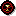
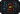
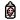

Understanding Game Seeds
In many games, randomness plays a major role in the player's experience. Seeds are essentially random strings of characters that are used as the foundation for most decisions made by the game's algorithms. By using the same seed, players can recreate the same experiences, even though the game might appear to be random at first glance.
How Seeds Work
When a player inputs a seed, the game uses it to control various random elements, such as item placement, enemy encounters, and level generation. This means that two players using the same seed will encounter identical circumstances, ensuring consistency across playthroughs. The benefit is that players can share seeds to recreate specific game scenarios.
Why Use Seeds?
Seeds offer a way to share experiences or replay specific game scenarios. Players may want to replay a favorite level, or challenge a friend to beat the game under the same conditions. Seeds also help game developers test specific cases and ensure balanced gameplay.
Manual Input of Seeds
Players can input a seed manually to guarantee that most randomly-generated decisions will occur the same every time. This feature allows players to experiment with different strategies while knowing the game's environment will remain consistent.
Notes Regarding Seed Entry
Seeds will be the same on every platform as long as the game version is also the same. For example, if you find a Rebirth seed on PC, you can use it on the 3DS version and it will be the same because the 3DS version only has Rebirth.
Except for some special seeds, inputting a seed will cause the 'no trophies' mark to appear. This prevents any achievements from being obtained on that particular run.
Special seeds do not affect level generation.
All alphanumeric characters are accepted except for 5, I, O, and U. On the PC version pressing the I, O, and U keys during seed entry will replace them with 1, 0, and V respectively.
(Except in Rebirth) Once a special seed has been entered, it will be permanently unlocked without needing to enter the code again. Pressing Q / Left Bumper during character selection will bring up the Easter Egg Section, in which any previously unlocked game mode can be selected. Selecting multiple modes at once is also possible.
On the special seed selection menu, it is possible to remove a discovered seed by focusing it and pressing Q+E+Tab on keyboard or LB+RB+X on controller.
Special Seeds
| ID | Seed | Description | CollapseEffects | |
|---|---|---|---|---|
| Miscellaneous | ||||
| 16 | BASE MENT |
Infinite basements | The Basement repeats infinitely.  | |
| 11 | KEEP AWAY |
Tricky pickups | Pickups mimic Isaac's movements. | |
| 72 | G0NE S00N |
Pickups time out | Pickups quickly fade. This includes pedestal items, shop purchases, devil deals, and the Cathedral/Sheol boss chest. | |
| 33 | FREE 2PAY |
F2P version | Isaac starts with 69 coins, but all items and consumables must be bought. | |
| 25 | PAC1 F1SM |
Pacifism | Enemies do not take damage. All rooms are considered cleared upon entering them; doors stay open, room rewards spawn, | |
| 32 | C0ME BACK |
Enemies respawn | Enemies, including bosses, respawn once Isaac leaves the room. Completing a room multiple times does not yield additional pickups. | |
| 71 | N0RE TVRN |
Point of no return | Boss rooms lock Isaac in, similar to the Mom fight. | |
| 24 | BRWN SNKE |
Poopy trail | Isaac leaves a trail of poop behind him as he walks. | |
| 73 | ALM1 GHTY |
Dog mode | Isaac is invincible. | |
| 55 | K1DS M0DE |
Kids' co-op mode | Makes co-op babies invincible. | |
| 79 | GFVE LLLL |
G Fuel! | Spawns a G FUEL! item in the starting room of each floor. Each copy picked up has different effects and adds various excessive "gamer style" visual and sound effects to the gameplay.
Enables an item blacklist consisting of: Dr. Fetus, | |
| Curses | ||||
| 56 | DARK NESS |
Permanent darkness | Permanent Curse of Darkness. | |
| 57 | LABY RNTH |
Inescapable labyrinth | Permanent Curse of the Labyrinth. | |
| 58 | L0ST |
Hopelessly lost | Permanent Curse of the Lost. | |
| 59 | VNKN 0WN |
Forever unknown | Permanent Curse of the Unknown. | |
| 60 | MAZE |
Unending maze | Permanent Curse of the Maze. | |
| 61 | BL1N D |
Incurable blindness | Permanent Curse of the Blind. | |
| 62 | CVRS ED |
Horrible curse | Permanent Curse of the Cursed. | |
| Curse Immunity | ||||
| 63 | N1TE L1TE |
Illuminate darkness | Provides immunity to Curse of Darkness. | |
| 64 | THRE AD |
Escape the labyrinth | Provides immunity to Curse of the Labyrinth. | |
| 65 | F0VN D |
I once was lost | Provides immunity to Curse of the Lost. | |
| 66 | N0W1 KN0W |
Know the unknown | Provides immunity to Curse of the Unknown. | |
| 67 | PATH F1ND |
Stay out of the maze | Provides immunity to Curse of the Maze. | |
| 68 | BRA1 LLE |
Heal the blind | Provides immunity to Curse of the Blind. | |
| 70 | BLCK CNDL |
Total curse immunity | Provides immunity to all curses. | |
| Damage Modifiers | ||||
| 47 | HARD HARD |
Full heart damage | Isaac takes a full heart of damage from all sources. | |
| 48 | BRTL B0NS |
Twelve heart damage | Isaac takes twelve hearts of damage from all sources. | |
| 26 | D0NT ST0P |
Don't stop moving | Isaac takes damage if he stops moving. | |
| 27 | THEG H0ST |
Damage on a timer | Every 45 seconds, a ticking will begin, and after 5 seconds, Isaac will take 1/2 heart of damage. Damage increases to 1 heart in Chapter 4 and beyond. Having invincibility during the time when damage should be inflicted blocks the damage. | |
| 28 | 30M1 N1TS |
30 minute limit | Gives a time limit of 30 minutes to beat the game. When the timer hits 29:45, a timer starts ticking, and after 30:00, Isaac takes damage every second. | |
| Control Modifiers | ||||
| 52 | 1CES KATE |
Ice physics | Makes the ground slippery. | |
| 74 | BRAV ERY |
Bravery | Isaac automatically fires tears in the same direction that he moves. Removes the ability to fire tears manually. | |
| 75 | C0WR D1CE |
Cowardice | Isaac automatically fires tears in the opposite direction that he moves. Removes the ability to fire tears manually. | |
| 12 | DRAW KCAB |
Reversed controls | All movement and firing keys are reversed. | |
| 76 | AX1S ALGN |
Axis aligned controls | Isaac cannot move diagonally. | |
| Camouflage | ||||
| 3 | CAM0 K1DD |
Camouflage player | Isaac blends into the ground. | |
| 4 | CAM0 F0ES |
Camouflage enemies | All enemies blend into the ground. | |
| 5 | CAM0 DR0P |
Camouflage stuff | Pickups and items blend into the ground. | |
| 6 | WH0A WHAT |
Camouflage EVERYTHING! | Isaac, enemies, pickups, and items all blend into the ground. | |
| 14 | 1MN0 B0DY |
Invisible player | Isaac becomes completely invisible. | |
| 15 | BL1N DEYE |
Invisible enemies | All enemies become completely invisible. | |
| Player Appearance | ||||
| 46 | THEB LANK |
The blank | Isaac has no face. | |
| 53 | KAPP A |
Grayscale | Isaac turns gray. | |
| 54 | H0H0 H0H0 |
Christmas | Isaac wears a Christmas hat. | |
| 35 | T0PH EAVY |
Big head mode | Isaac's head is large. | |
| 36 | T1NY D0ME |
Tiny head mode | Isaac's head is small. | |
| 37 | PTCH BLCK |
Black body | Isaac and his tears turn completely black. | |
| Visual Effects | ||||
| 38 | TEAR GL0W |
Glowing tears | Isaac's tears glow. | |
| 23 | BL00 00DY |
Extra gore | Makes a lot more blood appear after enemies die. | |
| HUD Modifiers | ||||
| 8 | B00B T00B |
Cathode rays! | Applies a filter that makes the game look like it's being played through a cathode ray tube. | |
| 9 | DYSL EX1A |
Dyslexia | All in-game text is rearranged. | |
| 10 | KEEP TRAK |
No HUD | Removes the HUD entirely. This affects the map, health, consumables, held items, pickup text, floor names, and more. | |
| 29 | MED1 C1NE |
Mystery pills | All pill names and descriptions show ???. | |
| 30 | FACE D0WN |
Mystery cards | All card names and descriptions show ???. | |
| Enemy Modifiers | ||||
| 13 | CHAM P10N |
Champion enemies | All enemies turn into champions if possible. | |
| 17 | C0CK FGHT |
Charmed enemies | All enemies are permanently charmed. | |
| 18 | C0NF ETT1 |
Confused enemies | All enemies are permanently confused. | |
| 19 | FEAR M1NT |
Scaredy enemies | All enemies are permanently scared. | |
| 20 | FRA1 DN0T |
Skittish enemies | Every few seconds, all enemies become scared. | |
| 21 | CLST RPH0 |
Asocial enemies | All enemies are permanently charmed and scared. | |
| Sound Modifiers | ||||
| 7 | FART SNDS |
Farty sounds | All sound effects are replaced with farts. | |
| 1 | SL0W 4ME2 |
Movement tempo | Music speed is affected by Isaac's walking speed. | |
| 2 | HART BEAT |
Health tempo | The lower Isaac's health is, the slower the music is and vice versa. | |
| 41 | ANDA NTE |
Downtempo | Music is slowed down. | |
| 42 | LARG HET0 |
Downtempo-- | Music is significantly slowed down. | |
| 43 | ALLE GR0 |
Uptempo | Music is sped up. | |
| 44 | PRES T0 |
Uptempo++ | Music is significantly sped up. | |
| Video Games | ||||
| 77 | SVPE RH0T |
SuperHot | While Isaac is not moving, time runs extremely slowly. Isaac's speed and fire rate remain normal at all times. | |
| 78 | M0DE SEVN |
Retro vision | Screen has a permanent Retro-Vision effect. | |
Notes Regarding Seed Effects
While the BRTL B0NS seed is enabled, getting hit will not result in death if Isaac possesses Red Hearts as well as Soul Hearts or Black Hearts. Instead, the Soul hearts and/or Black hearts will be completely depleted, leaving Isaac with only his Red hearts. Bone Hearts can also prevent death by being depleted without being destroyed, protecting the rest of the hearts.
If the ICES KATE seed is enabled, purple champion monsters will be much more dangerous, as escaping their gravitational pull is almost impossible.
When playing with the KAPP A seed enabled, certain items will override the grayscale, such as (except in Rebirth) Kidney Stone.
When the seed PACI FISM is enabled, effects that kill enemies on impact still remove enemies, but they will respawn when the room is re-entered.
Some seeds cannot be enabled alongside other seeds. For example, the PTCH BLCK seed cannot be enabled alongside THEB LANK.
It is possible to access other chapters while playing the BASE MENT seed. Additionally, Sacrifice Rooms after 12 uses can teleport to the Dark Room, making it possible to see a proper ending.
Trivia
Many special seeds can be found using the Fortune Telling Machine or the Rules Card. Some were shared by the developers.
Items not unlocked on a seed will be replaced by another unlocked item. The "DYSL EXIA" seed is a reference to dyslexia.
Musical tempo seeds include "ANDA NTE", "LARG HET0", and more. "KAPP A" refers to the Twitch emote, "ALM1 GHTY" references God Mode, and "FEAR M1NT" references spearmint gum.
The "T1NY D0ME" seed makes Isaac's hitbox smaller but does not prevent achievements. "SVPE RH0T" refers to the game SUPERHOT, and "M0DE SEVN" references SNES's Mode 7. "GFVE LLLL" is used in daily runs, and time moves only when the skeleton moves with the Tainted Forgotten in "SVPE RH0T".
Bugs
Bug! (Except in Rebirth) Entering the Blue Womb while using the "N0RE TVRN" seed is not recommended as the door leading to the Boss Room will not spawn, thereby trapping the player and ending the run.
Bug! Returning to the menu from a run that uses a seed that alters audio speed will cause the main menu audio to remain altered. This resets upon entering a new run, or exiting the game.
Bug! (In Repentance) The PAC1F1SM seed does not allow you to finish a The Beast run. Dogma never transforms in his second phase. If you manage to go to the Beast fight (with the debug console), the Chest spawns before Ultra Famine is killed.